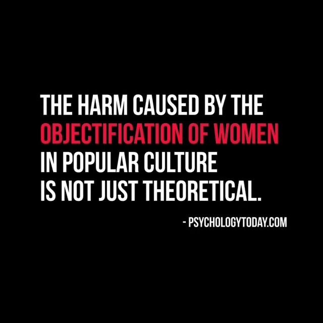

Below is a list of scenes from movies that are well known to showcase the male gaze. In these movies, the females are always under the male control and their character development are based on the male. To add, take notice of the type of clothes they are given to wear and movements they do.

List of Scenes: